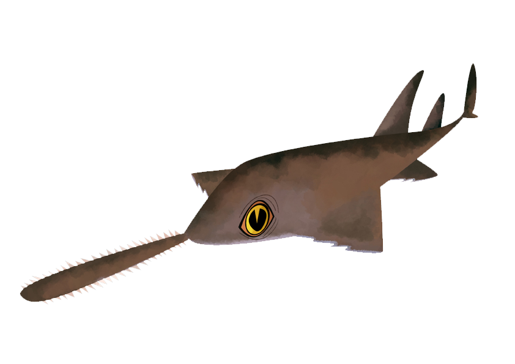

Fish Collection

- James
- Kissing Loach
- 5.5 inches
- streams of japan
- mud worms, water fleas

- joe exotic
- tequila splitfin
- 1.5 inches
- west-central mexico
- zooplankton, chironomids, tequila splitfin

- Larry
- Smalltooth sawfish
- 12 feet
- florida
- fish, shrimp, crabs
- Larry
- Smalltooth sawfish
- 12 feet
- florida
- fish, shrimp, crabs